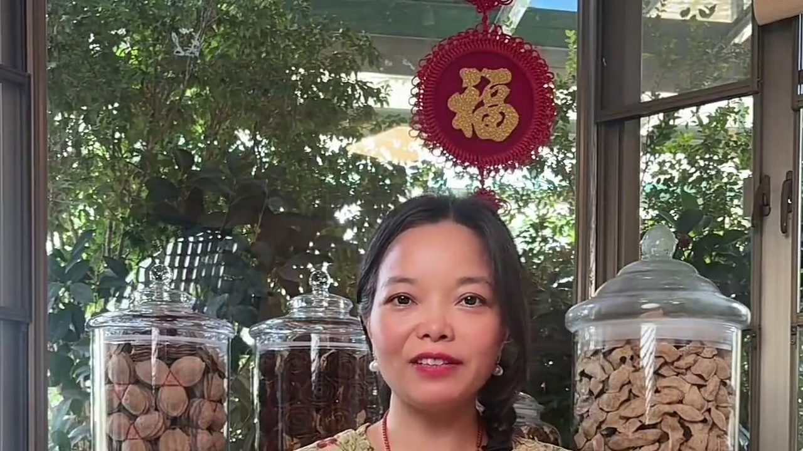
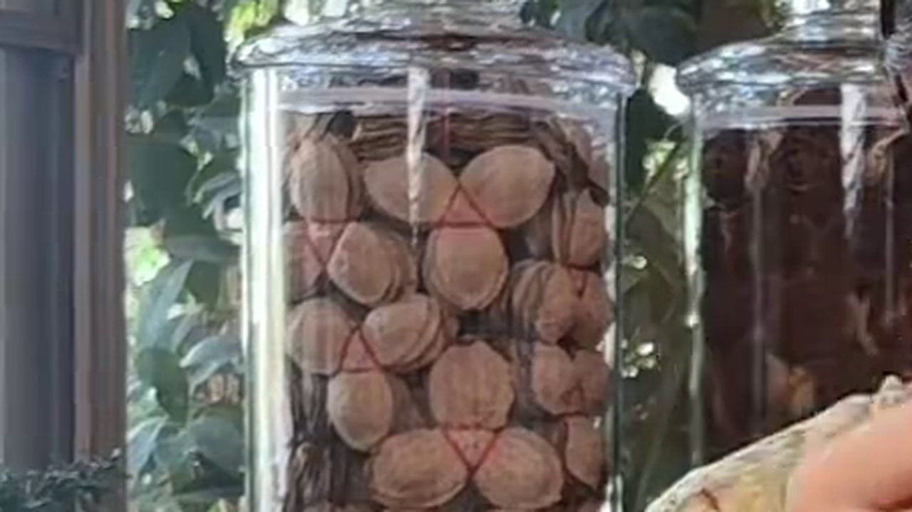
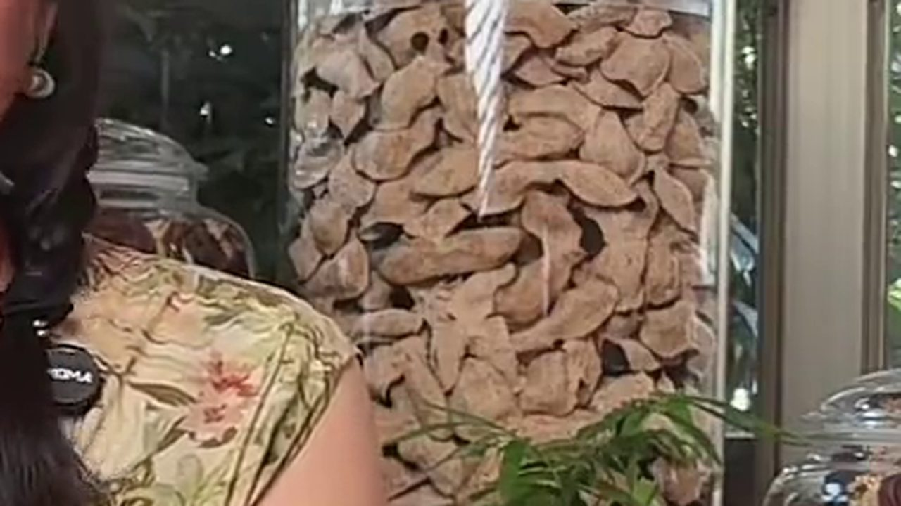

10月5日，冷空氣繼續東移南下。據光明網轉引人民日報報道，中東部多地出現降溫和大風天氣，當天早晨華北北部最低氣溫降到 0℃ 以下，北京城區氣溫不足 10℃；南方降雨區進一步南壓，福建、江西、廣東、廣西等地部分地區出現暴雨或大暴雨。中央氣象台預計 5 日至 7 日全國大部降水暫歇，並提醒冷空氣過境期間氣溫起伏明顯，要注意防寒保暖。再過幾天，就是寒露。
天氣一轉涼，新會陳皮怎麼吃，就成了新會天馬村店裡問得最多的一句話。很多人手裡明明存着好皮，卻只會拿它泡水——其實這片皮能做的事，比想像中多得多。
一、降溫那天早上，陳太拎着一罐十年皮進來

早上八點，新會天馬村的店剛開門，從香港回來的陳太就進來了，手裡拎着一罐去年買的十年皮。
「降溫降到廣東都落暴雨，煲湯肯定要落陳皮。但我除咗泡水，真係唔知仲可以點用。」
「泡水係最簡單，但唔係唯一。陳皮可以單獨煮、單獨泡，仲可以入膳——蒸魚、燜肉都放得。」
「蒸魚都放得？唔會搶咗魚味咩？」
「放一片就夠，唔使多。陳皮嘅香氣上嚟，魚嘅腥氣就退；鮮味反而留得住。呢個係廣東人煲咗幾十年嘅經驗。」
陳太半信半疑。我索性拆了一小片五年皮，用熱水沖開遞給她：「你先聞，再決定落唔落。」
二、一兩陳皮一兩金：陳皮能做的三件事

廣東有句老話：「一兩陳皮一兩金，百年陳皮勝黃金。」這句話說的是價值，但落到廚房裡，它其實有三條路。
第一，單獨煮。取一片陳皮，冷水下鍋，小火煮十來分鐘，湯色轉金黃就可以。煮比泡出味更快，香氣也更完整，天冷的時候喝一杯，從喉嚨暖到胃。
第二，單獨泡。保溫杯放一片，沸水燜住，一路喝一路加水，能喝一整個上午。出差、在辦公室，這是最省事的一種。
第三，入膳。這也是最多人忽略的一條——陳皮本身就是一味「和事」的食材：它能去腥、提鮮、解膩，跟肉類尤其合得來。
順帶說一句產區。新會陳皮的核心產區，天馬村、茶坑村、梅江、東甲各有性格：天馬皮甜香足、茶坑皮藥香突出、梅江皮油室飽滿、東甲皮產量少。入膳用哪一區的皮都可以，但同一道菜，香氣的落點真的不一樣。
三、入膳：蒸魚放一片，燜羊肉燜牛肉加一點
降溫這幾天，最適合的兩道家常菜，恰恰都少不了陳皮。
蒸魚。魚洗淨擺盤，陳皮用溫水泡軟、刮去內囊白膜，切細絲鋪在魚身上，大火蒸八到十分鐘。出鍋淋一勺熱油、一點蒸魚豉油。陳皮的陳香壓住腥氣，魚肉反而更清甜。
燜羊肉、燜牛肉。炆肉最怕兩件事：羶味和油膩。陳皮兩樣都能處理——它能把羶味壓下去，又能解掉油脂的膩。關鍵是不要早放：肉燜到七分軟才落陳皮，香氣才不會跑光。
「即係我嗰罐十年皮，唔止可以泡水，仲可以落鑊？」
「係。不過入膳唔一定要最老嘅皮。三到五年嘅皮香氣清、價錢實惠，落鑊最抵；十年以上留返嚟泡、嚟煮，或者送禮，先唔會嘥。」
四、別把家裡的陳皮白白浪費

這幾年我見過太多這樣的情況：親戚送的一罐好皮，放在櫃頂三五年，等到想起它的時候，不是發霉，就是香氣散盡。陳皮最怕的不是時間，而是存放不當。
降溫之後緊接的往往就是回南天與連陰雨。這幾天廣東部分地區還在落暴雨，空氣濕度大，家裡的陳皮要特別留意：
一、密封但要透氣。用乾淨的紙箱、棉紙袋或紫砂罐，不要用完全真空的塑料密封袋——陳皮要呼吸，悶死了反而容易出水。
二、離地離牆。潮氣從地面和牆面來，架子比地板好。
三、潮濕天不開箱。回南天、暴雨天不要開箱翻動，等天氣乾爽再取出透氣一兩個鐘。
四、有異味立即分開。一旦聞到酸味、霉味，把那幾片挑出來單獨處理，不要連累整罐。
陳太臨走前把那罐十年皮放回袋裡，說了一句：「原來我一直當佢係茶葉咁用。」其實這也是很多人的誤會——陳皮是食材，也是藥材，唯獨不只是「泡水的東西」。
常見問題
降溫這幾天，新會陳皮怎麼吃最合適？最實用的是三種：單獨煮水、保溫杯沖泡、入膳。天冷時煮一壺陳皮水最暖；若家裡燉肉、蒸魚，順手放一片，既去腥又提鮮。
陳皮單獨煮和泡水有什麼分別？煮是冷水下鍋小火煮十來分鐘，出味快、香氣完整，適合天冷時喝；泡是沸水燜住慢慢喝，方便但香氣釋放較慢。兩者都不需要加糖。
蒸魚放陳皮要放多少？會不會搶味？一片足夠，切細絲鋪在魚身上即可。先泡軟、刮去內囊白膜再切，苦澀感會明顯降低，只留香氣。
燜羊肉、燜牛肉放陳皮有什麼用？壓羶味、解油膩、提鮮。要在肉燜到七分軟時才落，太早放香氣會隨蒸氣跑掉。
入膳要用幾年的陳皮？三到五年最划算：香氣清、價格實在。十年以上的老皮建議留作泡飲或送禮，落鑊略為浪費。
暴雨潮濕天，家裡的陳皮怎麼保存？紙箱或紫砂罐密封但透氣，離地離牆存放；潮濕天不開箱，天晴再取出透氣。聞到酸味霉味要立即挑出隔離。
結語
冷空氣來得快，寒露也近了。一片陳皮能做的事，說到底就是把「時間」變成「味道」——煮一壺、蒸一條魚、燜一鍋肉，都是它該在的位置。手裡有皮的朋友，這幾天不妨翻出來用一用，別讓它繼續在櫃頂上等。
想知道手裡那片皮是真是假，看這篇《十年陳皮一場夢：新會陳皮四步辨真假》；想了解陳皮為什麼越放越香，翻翻這篇《新會陳皮的時光之味》。天氣轉涼，來新會陳皮村南門牌坊G04找滢滢姐坐坐，店裡常年備着熱茶，可以當面看皮、免費試喝；廣州、港澳與海外的朋友都可以郵寄。
下期預告：十月新會柑開始分批採收，青皮、微紅皮、大紅皮三種時機的皮擺在一起比——同一棵樹，早摘晚摘，香氣和價錢差多少，鏡頭下講清楚。